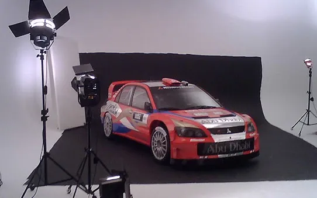
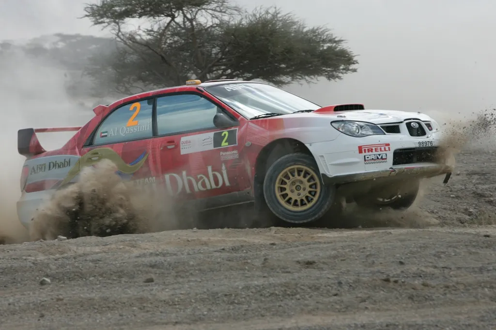
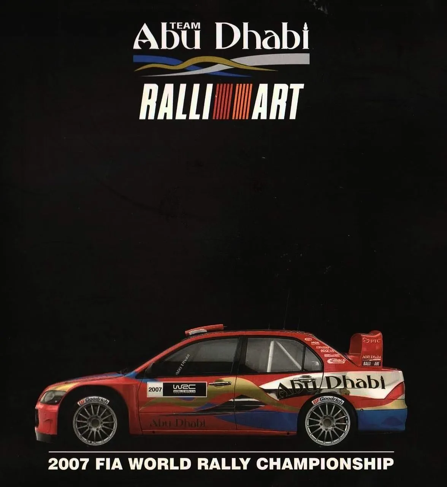
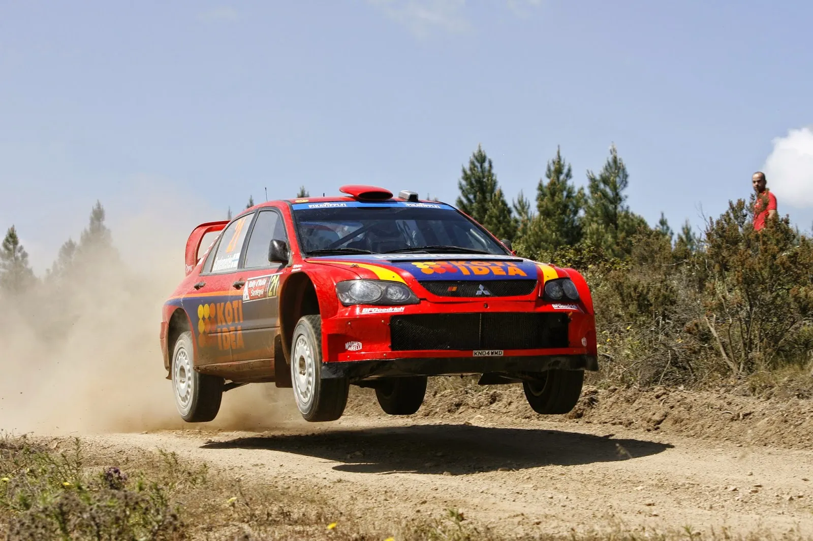

Mitsubishi and Abu Dhabi's Forgotten WRC Effort
Long before Rally Saudi Arabia, long before Rally Jordan and the Qatar and Abu Dhabi World Rally Teams, there was an effort for an Abu Dhabi backed team to join the WRC in 2007, using Mitsubishi Lancer Evo WRC cars.
Our story begins in late 2006, when UAE Sheikh Khalid Al-Qassimi, who had been competing in the Middle Eastern Rally Championship and in the PWRC was looking to enter the WRC with funding from the Abu Dhabi tourism board.

Sheikh Khalid Al-Qassimi was a MERC regular and had won the championship in 2004
The Emiratis wanted to enter as a Manufacturer Team, so that the Abu Dhabi name featured in the Constructors Standings and so that the team got as much publicity as possible. A manufacturer team in 2007, was different to a full-fledged manufacturer, and it was more like a privateer team. A manufacturer team could only use cars homologated before 2007, and did not have to participate in all 16 rallies, rather in at least 10 of them. They also had to enter two drivers in those 10 events.
The UAE backers approached MMSP, essentially the UK base of Ralliart, to back the team for a 12 round program for Al-Qassimi and a second driver. MMSP had run privateer Lancer Evos in 2006, achieving a podium with Daniel Carlsson in Rally Sweden, and were also still in charge of developing the Lancer, despite Mitsubishi pulling out of the WRC at the end of 2005.
After rumours saying that the second driver would be Markko Martin, Al-Qassimi’s teammate was revealed to be Toni Gardemeister, with the Finn rumoured to be ditching a campaign with Munchi’s Ford to drive with Mitsubishi. The team conducted testing on gravel in Catalunya, and their entry for 2007 was officially announced in mid-December.
As mentioned before, MMSP were still developing the Lancer, and were said to be bringing an upgrade to the car worth as much as half a second per kilometer when homologated. The team even went ahead with preparing the liveries for the season, appearing in leaked photos at the time.

Leaked team poster for the 2007 season, showing the car's livery
However, as the team was getting ready to ship the cars for Monte, Mitsubishi released this statement, effectively dooming the team’s entry.
"Mitsubishi ended its factory involvement in the World Rally Championship in 2006, and this situation will not change in 2007."
This way, MMSP and Abu Dhabi could not use the Mitsubishi name, and therefore, could not enter the championship as a manufacturer team. Mitsubishi had planned to re-enter the WRC in 2008 with the Evo X, something that never happened in the end.
Abu Dhabi pulled out of the team at the wake of Mitsubishi’s announcement, and turned to Kazaz, for a season in the ‘05 Subaru. That did not materialise.
Al-Qassimi’s entry for Monte with MMSP was pulled, with the Sheikh being replaced by Xevi Pons for the rally. MMSP would still run 10 rounds with at least one car in 2007, with Gardemeister and Pons doing the first three rounds of the season, with Juho Hanninen also joining as a third car for Norway. Pons left the team to join Subaru as a third car after Norway, and Gardemeister’s budget ran out after Sardinia. Estonian Urmo Aava replaced Gardemeister, and MMSP ran four cars in Finland for Aava, Kristian Sohlberg, Kaj Kuistila and Juho Hanninen. Aava’s entry in New Zealand later in the year would be the last time MMSP would run the Evo in the WRC.

Toni Gardemeister would get two 6th place finishes in the Lancer in Sweden and Sardinia
On the other side of the story, Al-Qassimi and Abu Dhabi would turn to M-Sport Ford, with Al-Qassimi running as a third car for selected rounds from 2007 until 2011, and Abu Dhabi acting as a title sponsor for the factory team. Al-Qassimi would switch to Citroen in 2013, and would remain with them until the end of 2018, still providing his sponsorship money to the team.
In the end, the Abu Dhabi Mitsubishi team never came to fruition, after Mitsubishi’s higher ups effectively torpedo’d the project. Somehow, this is the closest we’ve ever come to having a semi-works Mitsubishi team in the WRC after the Japanese manufacturer pulled out after the 2005 season.


Comments